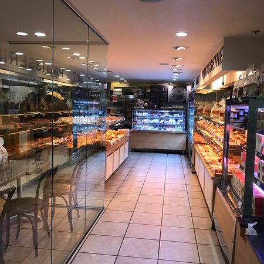

I'm Maple, a Drexel student that recently transfer from CS to UI/UX design!
Scroll down to see projects I have worked on and places I worked for!
Work
Paris Baguette
Paris Baguette is a Korean owned franchise that specializes in French pastries and desserts. They try to achieve visually appealing pastries that capture the attention of many customers.
Learn More!Free Library of Philadelphia
The Free Library of Philadelphia comprises many Libraries throughout Philadelphia, often having events and school programs for children to attend. They advocate for students who are from low income families that cannot afford paid school programs, but want a way for their children to actively learn outside of school.
Learn More!
Cambodian Association of Greater Philadelphia
The Cambodian Association of Greater Philadelphia (CAGP) is an organization that strives to improve quality of life for many Cambodian-Americans through direct service, advocacy and cultural education. They provide many programs such as school programs, case management, and preschool. They often communicate with immigrants with their native languages to provide information on what benefits they can receive in America.
Learn More!Projects
Dremulator
A game where you are a Drexel student named Drem, trying to pass their classes. There are in-game mechanics that include combat with enemies on your way to classes. The professors are known as “bosses” in which you would battle it out, determining if you pass or not!
Learn More!